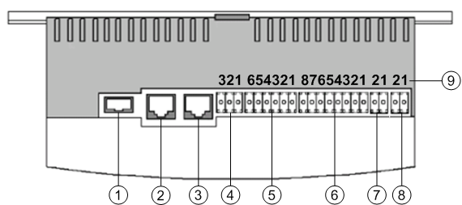
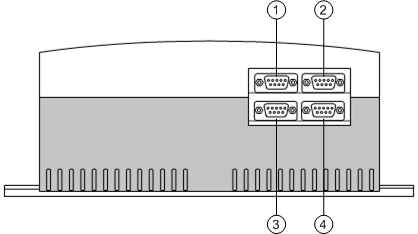

NK823x Interfaces and Pins

| Description |
1 | USB (not supported) |
2 | Ethernet port 2 |
3 | Ethernet port 1 |
4 | 1 relay output (X101 - See NK823x Pin Assignment) |
5 | 3 digital inputs (X102 - See for NK823x Pin Assignment |
6 | Dual power supply input for redundant solutions (X103 - See NK823x Pin Assignment) |
7 | RS485 COM 1 (X104 -See NK823x Pin Assignment) |
8 | RS485 COM 2 (X105 - See NK823x Pin Assignment) |
9 | Pin numbering |

| Description |
1 | COM 3 (available on NK8235.4 only) 1) |
2 | COM 4 (available on NK8235.4 only) 1) |
3 | COM 1 |
4 | COM 2 |
1) | COM 3 and COM 4 do not support the hardware-handshaking signals for modem control (see NK823x Pin Assignment). |